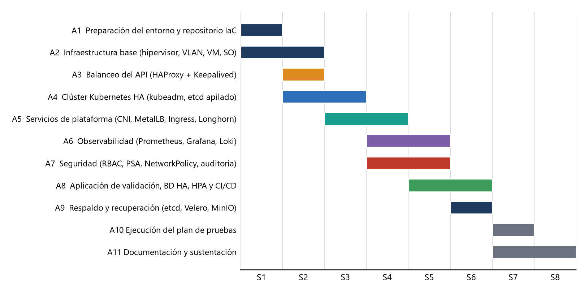

Diseño de la solución tecnológica a partir de la revisión bibliográfica de 43 trabajos
Universidad Privada de Tacna · Escuela Profesional de Ingeniería de Sistemas
Docente: Renzo Alberto Taco Coayla · Cortez, Quispe, Vilca, Ludeña, Jimenez, Cutipa · Noviembre de 2026
// CONTEXTO
El problema: aplicaciones sin redundancia
ANTES
Situación actual
Aplicaciones en máquinas virtuales individuales, sin redundancia
Despliegues manuales de 30 a 45 minutos, sin reversión
Respaldos manuales y sin pruebas de restauración
Sin monitoreo centralizado ni alertas
Red plana, accesos compartidos y sin escaneo de vulnerabilidades
DESPUÉS
Necesidad
Continuidad: disponibilidad mensual ≥ 99,9 %
Despliegue ágil con reversión inmediata
Seguridad, trazabilidad y accesos por rol
Respaldos verificados con metas de RPO y RTO
Visibilidad antes de que los usuarios noten la falla
Escenario de referencia supuesto: ≈ 250 usuarios, 12 aplicaciones internas y 1 portal público; carga estimada ≈ 15 vCPU y 36 GB.
Plataforma Kubernetes de alta disponibilidad · II Unidad
02 / 23
// OBJETIVO GENERAL
Una plataforma que siga funcionando cuando algo falla
Kubernetes con alta disponibilidad, seguridad, observabilidad y operación automatizada, sustentada en la investigación bibliográfica de la I Unidad.
3
dominios de falla físicos
≥ 99,9 %
de disponibilidad mensual
5 / 30 min
RPO / RTO máximos
Plataforma Kubernetes de alta disponibilidad · II Unidad
03 / 23
// INVESTIGACIÓN
De la investigación al diseño
HALLAZGO
FUENTE
DECISIÓN DE DISEÑO
etcd pierde rendimiento al crecer el clúster
Jeffery et al., 2021
etcd de 3 miembros sobre SSD
Raft no tolera fallas bizantinas
Diouf et al., 2020
Riesgo aceptado; hardening y auditoría
Las apps con estado se recuperan lento (−50 % con un controlador)
Vayghan et al., 2020
PostgreSQL con el operador CloudNativePG
Kubernetes completo rinde mejor con carga sostenida
Kjorveziroski, 2022; Koziolek, 2023
kubeadm; K3s solo como contingencia
Capa eBPF y límites mitigan picos y DDoS (−32 % de timeouts)
Jiang y Milani, 2026
Cilium, HPA con tope y límite de tasa
Trazabilidad completa de 16 hallazgos en el documento técnico (Tabla 3)
04 / 23
// INVESTIGACIÓN
Requerimientos medibles
DISPONIBILIDAD
≥ 99,9 %
Disponibilidad mensual (≤ 43,8 min de caída)
DATOS
≤ 5 min
RPO de las bases de datos (WAL continuo)
RECUPERACIÓN
≤ 30 min
RTO de un namespace (reconstrucción total ≤ 4 h)
RENDIMIENTO
≤ 500 ms
Latencia p95 a 200 solicitudes/s, errores < 1 %
CONMUTACIÓN
≤ 10 s
Conmutación de la IP virtual del API
ESCALADO
3 → 10
Réplicas del HPA en ≤ 3 min con carga 4×
CAPACIDAD
N+1
Capacidad con un worker o un host caído
SEGURIDAD
≥ 90 %
Controles CIS aplicables en PASS (kube-bench)
16 requerimientos funcionales y 21 no funcionales, cada uno con una prueba asociada.
Plataforma Kubernetes de alta disponibilidad · II Unidad
05 / 23
// DISEÑO
Arquitectura lógica
01 · ACCESO
VIP del API (HAProxy y Keepalived) y VIP de servicios (MetalLB y Traefik)
02 · CONTROL
3 nodos de control con etcd apilado
03 · CÓMPUTO
3 workers con Cilium, Longhorn y CloudNativePG
04 · TRANSVERSAL
Observabilidad, seguridad, automatización y respaldo
Plataforma Kubernetes de alta disponibilidad · II Unidad
06 / 23
// DISEÑO
Alta disponibilidad ante fallas
Falla
Efecto
Recuperación
Tiempo
Cae lb01 (balanceador activo)
Ninguno
Keepalived mueve la VIP a lb02
≤ 10 s
Un nodo de control
API disponible
HAProxy lo excluye; etcd reelige líder
≤ 10 s
Un nodo de trabajo
Pods reprogramados
tolerationSeconds y planificador
≤ 5 min
Un host físico
Sin corte del servicio
Réplicas en los otros hosts (N+1)
Sin corte
Primario de PostgreSQL
Escrituras en pausa
CloudNativePG promueve una réplica
≤ 30 s
Dos nodos de control
API de solo lectura; apps siguen
Restaurar el nodo o el snapshot de etcd
≤ 4 h
Plataforma Kubernetes de alta disponibilidad · II Unidad
07 / 23
// DISEÑO
Componentes y precios de mercado
Componente
Precio
Servidor Dell R660xs ×3
S/ 32 468 c/u
Switch MikroTik 24×10G
S/ 1 706
Firewall Protectli FW4C
S/ 1 022
UPS APC de 3 kVA
S/ 11 949
NAS Synology + 4 discos
S/ 8 306
Proxmox VE Basic ×3
S/ 1 409 por socket al año
Precios de mercado consultados el 11/11/2026, convertidos a soles con S/ 3,418 por dólar (SBS) y S/ 3,808 por euro (BCRP) del 10/11/2026; las fuentes están en el informe (Sección 12.2).
Plataforma Kubernetes de alta disponibilidad · II Unidad
08 / 23
// INFRAESTRUCTURA
Hardware: servidores de virtualización
Elemento
Especificación
Modelo
Dell PowerEdge R660xs (1U) con BMC iDRAC; host de virtualización Proxmox VE
Intel X710-DA2: 2 × 10 GbE SFP+ en bond LACP (troncal 802.1Q), más puerto iDRAC
Energía
Fuentes redundantes conectadas a UPS online
CARGA ESTIMADA POR HOST (128 GB)
pve01
46 GB · 20 vCPU
pve02
42 GB · 18 vCPU
pve03
40 GB · 16 vCPU
S/ 32 468
por servidor Dell
S/ 100 171
3 servidores con tarjeta de 10 GbE
Con un host caído, los dos workers restantes ofrecen 24 vCPU y 64 GB frente a una demanda estimada de 15 vCPU y 36 GB: capacidad N+1.
Plataforma Kubernetes de alta disponibilidad · II Unidad
09 / 23
// INFRAESTRUCTURA
Hardware: red, respaldo y energía
Equipo
Especificación y función
Precio
Firewall perimetral
Protectli Vault FW4C, 4 × 2,5 GbE, con OPNsense: NAT, IDS/IPS, VPN WireGuard y DNS
S/ 1 227
Switch core
MikroTik CRS326-24S+2Q+RM: 24 × SFP+ de 10G y 2 × QSFP+; 802.1Q, LACP y ACL
S/ 1 706
Cableado
6 cables DAC SFP+ de 3 m y cableado categoría 6A
S/ 451
NAS de respaldo
Synology DS923+ de 4 bahías; MinIO (S3) en contenedor, en la VLAN 60
S/ 2 153
Discos del NAS
4 × Seagate IronWolf Pro de 8 TB en RAID 5: ≈ 24 TB útiles
S/ 6 152
UPS online
APC Smart-UPS SMT3000RMI2U de 3 kVA, con apagado ordenado
S/ 11 949
Rack
Tripp Lite SmartRack de 12U de profundidad extendida
S/ 2 468
S/ 26 107
red, respaldo y energía (sin IGV ni flete)
RIESGO ACEPTADO
Un solo switch y un solo firewall; equipo de repuesto en frío. Segundo equipo en alta disponibilidad como trabajo futuro.
RESPALDO 3-2-1
Copia local en el NAS y copia semanal cifrada de 2 TB fuera de sitio (bucket S3 externo o disco rotado).
Plataforma Kubernetes de alta disponibilidad · II Unidad
10 / 23
// INFRAESTRUCTURA
Máquinas virtuales y almacenamiento
MÁQUINAS VIRTUALES POR ROL
Rol
N.º
vCPU
RAM
Disco
Balanceador del API (HAProxy + Keepalived)
2
2
2 GB
20 GB
Plano de control + etcd
3
4
8 GB
80 GB
Nodo de trabajo
3
12
32 GB
100 + 200 GB
Bastión (Ansible, kubectl)
1
2
4 GB
40 GB
Total: 9 VM, 54 vCPU y 128 GB de RAM sobre 96 hilos y 384 GB físicos.
ALMACENAMIENTO POR NIVEL
Nivel
Tecnología
Capacidad
Host
ZFS espejo 2 × 960 GB
≈ 0,9 TB útiles
Clúster
Longhorn, disco de 200 GB por worker
600 GB brutos; 200–300 GB netos
Respaldo
MinIO sobre NAS, RAID 5
≈ 24 TB útiles
Fuera de sitio
Bucket S3 externo o disco rotado
2 TB
Demanda estimada de Longhorn: ≈ 360 GB brutos (60 % de 600 GB); umbral de uso ≤ 70 %.
LABORATORIO
Perfil para la III Unidad: 9 VM, 15 vCPU y ≈ 24 GB en una estación de ≥ 32 GB y ≥ 8 núcleos, con la misma topología lógica (nombres, roles y direccionamiento).
Plataforma Kubernetes de alta disponibilidad · II Unidad
11 / 23
// SOFTWARE
Software: pila tecnológica y licencias
VIRTUALIZACIÓN Y SISTEMA
Proxmox VE (KVM + ZFS)AGPL-3.0
Rocky Linux 9 + SELinuxcódigo abierto
OPNsense (firewall)BSD-2
Suscripción Proxmox Basic€ 370 / socket
ORQUESTACIÓN
Kubernetes (kubeadm)Apache-2.0
containerdApache-2.0
HelmApache-2.0
cert-managerApache-2.0
RED Y ACCESO
Cilium + Hubble (eBPF)Apache-2.0
HAProxy + KeepalivedGPL
MetalLB (modo L2)Apache-2.0
TraefikMIT
DATOS Y RESPALDO
LonghornApache-2.0
PostgreSQLPostgreSQL
CloudNativePGApache-2.0
MinIO (S3) + VeleroAGPL / Apache
OBSERVABILIDAD
Prometheus + AlertmanagerApache-2.0
Grafana + LokiAGPL-3.0
AlloyApache-2.0
FalcoApache-2.0
AUTOMATIZACIÓN Y CI
AnsibleGPL-3.0
Packer + Vagrantsin costo de uso
Trivy (escaneo en CI)Apache-2.0
GitHub Actions o GitLab CIsegún plan
LICENCIAS
Solo se paga la suscripción de Proxmox VE Basic: 3 sockets × € 370 al año ≈ S/ 4 361. El resto no tiene costo de licencia (ediciones comunitarias).
Plataforma Kubernetes de alta disponibilidad · II Unidad
12 / 23
// DISEÑO
Diseño de red
VLAN
Uso
Subred
10
Gestión
10.10.10.0/24
20
Control
10.10.20.0/24
30
Workers
10.10.30.0/24
40
Datos
10.10.40.0/24
50
Servicios
10.10.50.0/24
60
Respaldo
10.10.60.0/24
100
Usuarios
10.10.100.0/23
Firewall con denegación por defecto; acceso remoto solo por VPN con MFA y bastión.
Plataforma Kubernetes de alta disponibilidad · II Unidad
13 / 23
// DISEÑO
Seguridad en profundidad
14
riesgos valorados
11
amenazas (STRIDE)
Los 3 riesgos críticos iniciales bajan a nivel medio o bajo
RBAC mínimo, Pod Security Admission y NetworkPolicy
Aceptados: switch único y falla bizantina
Plataforma Kubernetes de alta disponibilidad · II Unidad
14 / 23
// OPERACIÓN
Operación, respaldo y monitoreo
01 · RESPALDO
Respaldo 3-2-1
Snapshot de etcd cada 6 h
Velero a diario hacia MinIO
WAL de PostgreSQL continuo (RPO ≤ 5 min)
Copia fuera de sitio semanal
02 · PROCESOS
Modelo operativo
Roles definidos con matriz RACI
Parches mensuales y actualización trimestral
Pruebas de restauración trimestrales
Incidente P1: respuesta en 15 min, resolución en 2 h
03 · VISIBILIDAD
Observabilidad
Prometheus, Alertmanager y Grafana
Loki para registros y Hubble para flujos de red
10 alertas mínimas por correo y Telegram
Auditoría de la API retenida 90 días
Plataforma Kubernetes de alta disponibilidad · II Unidad
15 / 23
// OPERACIÓN
Plan de implementación

8 semanas, 11 actividades
6 integrantes, de 8 a 10 h por semana
Laboratorio: 9 VM en una estación de 32 GB o más
Todo el software es de código abierto
Git como origen único, con Ansible y Helm
Plataforma Kubernetes de alta disponibilidad · II Unidad
16 / 23
// OPERACIÓN
Plan de pruebas: 27 casos
2
Infraestructura y red
7
Alta disponibilidad
7
Seguridad
3
Rendimiento
3
Respaldo
5
Observabilidad y operación
Prueba
Cómo
Criterio de aceptación
PH-01 Conmutación de la VIP
Apagar lb01 con kubectl en bucle
Interrupción ≤ 10 s
PH-04 Falla de un worker
Apagar wk01 bajo carga
≥ 99 % de éxito; ≤ 5 min
PS-02 NetworkPolicy
Conexiones no autorizadas
100 % bloqueadas
PR-01 Carga base
k6 a 200 solicitudes/s, 15 min
p95 ≤ 500 ms
Plataforma Kubernetes de alta disponibilidad · II Unidad
17 / 23
// FACTIBILIDAD
Inversión inicial (CapEx) desglosada
Concepto
Cant.
US$
S/
Servidores Dell PowerEdge R660xs
3
28 497
97 403
Tarjetas de red Intel X710-DA2 (2 × 10 GbE)
3
810
2 769
Switch MikroTik CRS326-24S+2Q+RM
1
499
1 706
Cables DAC SFP+ de 3 m
6
132
451
Firewall Protectli FW4C + RAM y SSD
1
359
1 227
NAS Synology DS923+
1
630
2 153
Discos Seagate IronWolf Pro de 8 TB
4
1 800
6 152
UPS APC Smart-UPS de 3 kVA
1
3 496
11 949
Rack Tripp Lite de 12U
1
722
2 468
Hardware
S/ 126 278
+ IGV 18 %
S/ 22 730
+ Flete y gestión 5 %
S/ 6 313
Total CapEx
S/ 155 321
PESO EN EL HARDWARE
Servidores
77,1 %
UPS
9,5 %
NAS y discos
6,6 %
Red (NIC, switch, DAC, firewall)
4,9 %
Rack
2,0 %
Precios de mercado del 11/11/2026 en US$, convertidos a S/ 3,418 por dólar.
Plataforma Kubernetes de alta disponibilidad · II Unidad
18 / 23
// FACTIBILIDAD
Costo operativo anual (OpEx)
Energía y climatización
1,6 kW × 8 760 h × US$ 0,16 por kWh
S/ 7 667
Enlace a Internet simétrico de 100 MbpsESTIMADO
sin tarifa publicada; requiere cotización
S/ 6 152
Garantía, soporte y repuestos de hardwareESTIMADO
5 % del hardware
S/ 6 313
Proxmox VE Basic
3 sockets × € 370 al año
S/ 4 361
Certificación CKA de 2 administradores
US$ 445 por examen
S/ 3 042
Copia fuera de sitio de 2 TB (Backblaze B2)
US$ 6,95 por TB al mes
S/ 571
S/ 28 106
costo operativo anual, sin personal
S/ 2 342
equivale a este monto por mes
44 %
del OpEx es estimado y debe validarse con cotizaciones
El costo de personal no se incluye: se asume igual en on-premise y en la nube. Precios del 11/11/2026 a S/ 3,418 por dólar.
Plataforma Kubernetes de alta disponibilidad · II Unidad
19 / 23
// FACTIBILIDAD
Nube equivalente: costo mensual en AWS
Concepto
US$ / mes
S/ / mes
3 nodos m5.2xlarge (8 vCPU y 32 GB), bajo demanda
841
2 875
Plano de control gestionado de EKS
73
250
Almacenamiento: 600 GB gp3 y 200 GB de snapshots
58
198
2 Network Load Balancer (capacidad estimada)
40
137
NAT Gateway y 300 GB de datos
73
250
Observabilidad gestionada (estimada)
100
342
Total bajo demanda
1 185
4 050
Con compromiso de 1 año (estimado)
891
3 045
S/ 4 050
por mes bajo demanda; S/ 48 604 al año
71 %
del costo mensual es cómputo (3 × m5.2xlarge)
S/ 3 045
por mes con compromiso de 1 año (25 % menos, supuesto)
Región us-east-1; tarifas publicadas de AWS (EKS US$ 0,10 por hora, m5.2xlarge US$ 0,384 por hora). Sin personal. Convertido a S/ 3,418 por dólar; las filas en S/ pueden diferir en S/ 1–2 del total por redondeo.
Plataforma Kubernetes de alta disponibilidad · II Unidad
20 / 23
// FACTIBILIDAD
Factibilidad económica a 5 años
S/ 155 321
Inversión inicial con IGV
S/ 28 106
Costo anual sin personal
S/ 295 852
On-premise a 5 años
S/ 243 020
Nube bajo demanda a 5 años
On-premise cuesta un 22 % más que la nube bajo demanda a 5 años (con compromiso de un año, la nube cuesta S/ 182 726). La ventaja es el control y la soberanía de los datos, no el precio. Precios del 11/11/2026 a S/ 3,418 por dólar (SBS, 10/11/2026).
Plataforma Kubernetes de alta disponibilidad · II Unidad
21 / 23
// FACTIBILIDAD
Escenarios y punto de equilibrio
COSTO TOTAL A 5 AÑOS
Nube con compromiso de 1 año
S/ 182 726
sin CapEx
On-premise con servidores reacondicionados
S/ 219 924
CapEx S/ 79 393; sin garantía de fábrica
Nube bajo demanda
S/ 243 020
referencia de comparación
On-premise con IGV recuperable
S/ 273 122
CapEx S/ 132 591
On-premise (propuesta base)
S/ 295 852
CapEx S/ 155 321
COSTO ACUMULADO (S/)
Año
On-premise
Nube bajo demanda
Nube 1 año
Año 1
183 427
48 604
36 545
Año 2
211 533
97 208
73 091
Año 3
239 639
145 812
109 636
Año 4
267 746
194 416
146 181
Año 5
295 852
243 020
182 726
El valor para IGV recuperable se calcula restando el IGV del costo base; el resto proviene del informe.
EQUILIBRIO
Frente a la nube bajo demanda, on-premise se amortiza recién a los ≈ 7,6 años (vida útil de un servidor: 5 a 7 años). Se justifica por control y soberanía de los datos, no por costo.
Plataforma Kubernetes de alta disponibilidad · II Unidad
22 / 23
// CIERRE
Conclusiones
Trazable: cada decisión se apoya en un hallazgo de la investigación
Resiliente: sin puntos únicos de falla lógicos y con capacidad N+1
Seguro: defensa en profundidad con riesgos residuales aceptados de forma explícita
Verificable: metas de 99,9 %, RPO ≤ 5 min y RTO ≤ 30 min, con 27 pruebas
Transparente: cuesta más que la nube; el valor está en el control y la soberanía de los datos
TRABAJO FUTURO
Segundo switch y firewall en alta disponibilidad
SSO con OIDC y autoescalado predictivo
Sitio de recuperación en la nube
SIGUIENTE PASO
Implementar y validar en la III Unidad exactamente lo diseñado.
Plataforma Kubernetes de alta disponibilidad · II Unidad